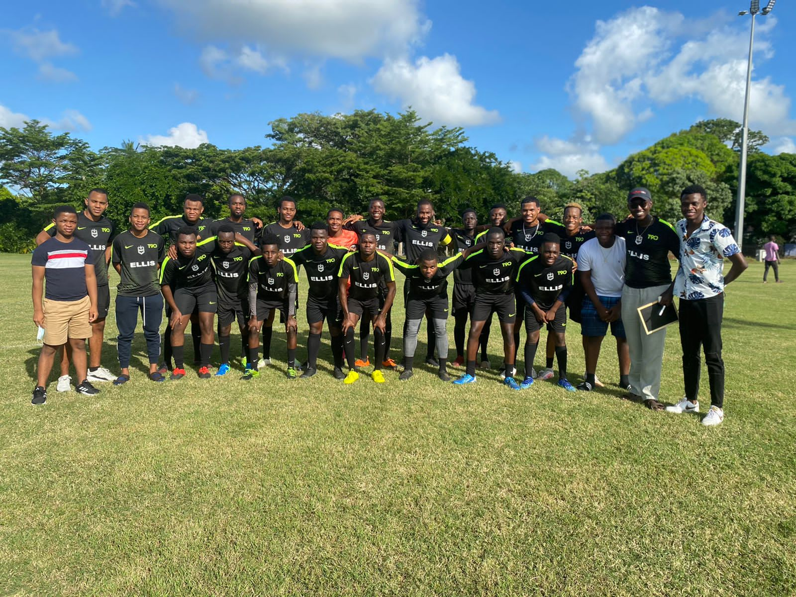

01
Background
I'm Justus Wamswa Chemirmir from Nairobi, Kenya.
I completed my secondary education at Lenana School before joining African Leadership College, Mauritius,
where I'm pursuing BSc(Hons) Computing. I love programming, network technology and cyber security.
In line with my major, my mission is to provide job opportunities for the youth
through technology. I also enjoy playing football and photography.
My personal contact is j.chemirmir@alustudent.com
02
WHY ALU?
African Leadership University was brought to my attention back in high School
by my senior friends who had interacted with the African Leadership Academy, where
some ended up. It was, then, a new institution therefore I did not think
through it much when considering options for tertiary education.
Upon completion of my secondary studies, I was ready to pursue a lifelong dream of studying abroad. After
discussions with
my mentors and deliberate consideration of a plethora of institutions across the globe, ALU ended
up as one of my options.
The school's learning model where students are involved in every facet of there studies was
the clincher that made me settle for the school. I wanted to own every step of my university experience
and what better school than ALU. The institution also offers UK accredited degrees through their
partnership
with Glasgow Caledonian Univerty, Scotland.
03
Application and Acceptance
The application process was not the most linear as online research alone was not that efficient due to the
novelty
of the institution. I interacted with students and admissions officers who gave insightful comments and
were
willing to respond to queries swiftly. Ironically, I ended up submitting my application at the last
minute. Let's say I was
paying close attention to details. I didn't want to miss this opportunity.
I had to be the happiest at the moment I received my acceptance. It
was a dream come true. I celebrated this success with my family and friends in numerous befitting ways.
I took a gap year to explore different fields and focus more on my career journey.
During that period the COVID-19 pandemic blew out and brought most operations worldwide to a standstill.
It was a period of uncertainty considering I was suppossed to begin my studies that fall but health
precedes everything else. After negotiations with the Ministry of Health, the school managed to fly us to
Mauritius at the start of January 2021. At last some good news was coming our way. We underwent all
the necessary health protocols including a two-week mandatory quarantine to curb the spread of the virus.
The discussions we had as students when we met at the airport were continued on phone calls in hotel
rooms.
The hospitality we received during that tough period was top-notch.
04
Mauritius
We were warmly received by staff and students on our arrival to campus. The atmosphere was vibrant, and
services
and facilities were exquisite. The classes are very interactive with the students at the center of
discussions
through our able facilitators. Most classes end on Thursday and a session lasts for 1 hour 30 min. The number
of classes per day are different depending on your course of study but there are usually 2 classes per day on average.
I have engaged in numerous on and off campus activities. I'm a Member of Karma FC which is the school's
football club. I've also participated in Hult Prize Competition to pitch our enterpreneurial venture. The school is always
abuzz with activities.
Mauritius being a tropical island, it is humid and warm almost throughout the year. The island hosts vast plantations of
sugarcane which is the main cash crop. There are a lot of natural phenomena to witness, places to visit and activities to do:
white sandy beaches, waterfalls, national parks, museums, water parks, aquariums, hikes, etc. I also got to experience two cyclones;
it is scary and catastrophic but following the government's laid procedures almost assures you safety. The country's security
is high, healthcare is free in public hospitals, and the people are friendly.
05
Social Life
As noted earlier, there is always something to do outside schoolwork. From activities organised by the school
to those arranged by the student themselves. These can be sports, resident games, cultural activities, diversity and
inclusion programmes, visitors from outside and many more. The activities can be done from within or outside school
boundaries. The staff are also much engaged where needed.

06
Future and Careers
There is a Career Development Department that helps students to navigate there career paths and choices
while in ALU and beyond. You will get enough guidance and coaching to help you kick-start your career journey.
There is also an Entrepreneurship Department that promotes innovation through partial funding of student-led startups
and organises competitions from time to time.
Lastly, students have also taken it upon themselves to create clubs and societies that help them hone their skills. I
have personally used these gateways to help me further my knowledge and skills in the world of employment and entrepreneurship.
07
Advice To Prospective Students
African Leadership University is filled with opportunities from the moment you apply. It has partnerships
with world-renowned companies including members of the African Leadership Group. The school offers grants and full
scholarships which you should take advantage of. Utilise every opportunity to connect with alumni and visitors for they
be your next employer or business partner. The student body is one of the best. Make as many friends as you would like.
Above all, take your academics seriously.
DO HARD THINGS AND HAVE FUN!!!